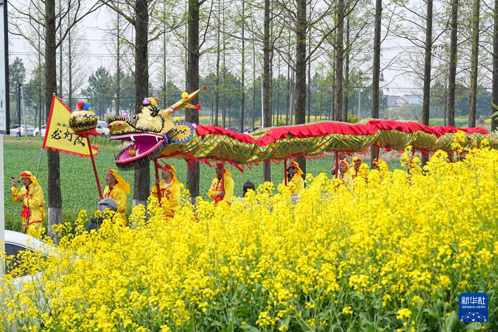
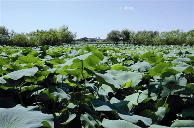

老街起点从街巷进入村庄老街适合作为路线起点，让参观者先感受马鸣村的日常尺度。
马鸣村的乡村文旅不应只是“看风景”和“打卡”。研究把水网、老街、光影故事馆、桃花岛、蚕桑文化和蚕丝被产业组织成可参观、可学习、可体验、可传播的乡村文旅内容。
一条好的乡村文旅路线，需要让人先看见空间，再理解民俗，最后回到蚕桑和丝绸生活。


马鸣村的乡村文旅和展示不是从零开始想象。桐乡已有蚕桑文化公共传播的实践经验，可以为马鸣村的展陈、研学和文化礼堂活动提供参考。
中国丝绸博物馆资料显示，“丝绸之路文化寻根图片展”由中国丝绸博物馆、桐乡文化馆和桐乡市非遗保护中心联合举办，曾将蚕桑文化送到桐乡多个乡镇图书馆和农村文化礼堂，其中包括洲泉等镇。
该展览强调用通俗易懂、图文并茂的方式让当地居民回味和了解蚕桑文化。这对马鸣村很有启发：展示不应只面向外来游客，也应服务本地居民、青少年和返乡者。
这些方向说明，研究提升之后，马鸣村可以把文化资源转化为更清晰的路线、展陈、课程、短视频和文旅伴手礼叙事。
这不是官方游览路线，而是一条适合普通读者边走边看的“文化阅读路线”。真实开放情况、预约方式和交通信息应以现场与官方发布为准。
先看石板路、茶馆、店铺和老街尺度。这里适合观察马鸣村的日常生活，而不是急着寻找“景点”。可以关注清晨茶馆、老店铺和街巷声音。
马鸣老庙和村名传说可以作为理解地方记忆的入口。走到水边时，可以观察河道、石桥、岸线和民居之间的关系。
沿河行走，观察马鸣村如何被水系组织。水网不是背景，而是村落生活、交通、景观和蚕桑生产记忆的重要条件。
如果能参观光影故事馆或电影机展示相关空间，可以把它与马鸣村影像记忆联系起来：乡村如何被记录，村民如何观看影像，今天又如何用影像讲述乡村。
桃花岛适合观察乡村景观如何被重新整理。它不是古迹式空间，而是水乡村落在当代进行公共空间更新的一个节点。
最后回到蚕桑和蚕丝被。可以关注丝绵、被胎、手工拉丝、产品展示和品牌故事，理解马鸣村如何把蚕桑文化带入今天的生活。
乡村文旅不只是路线安排，也是一种观察方式。下面几篇手记以普通参访者的视角记录马鸣村：看见什么、在哪里停留、为什么这个细节值得记住。




中国丝绸博物馆展陈、传统桑蚕丝织技艺非遗资料、桐乡蚕花水会和文化特派员实践，都能为马鸣村的游学和展示提供参照。
“天蚕灵机”常设展覆盖蚕桑习俗、制丝印染和织绣技艺，可为村落展陈和公共美育提供展陈逻辑参照。
新闻报道中的蚕花水会和高杆船技为仪式影像、身体技艺和文旅观看关系提供可分析样本。
文化特派员实践可以把地方产品、乡村故事、展览活动和公共美育连接起来。